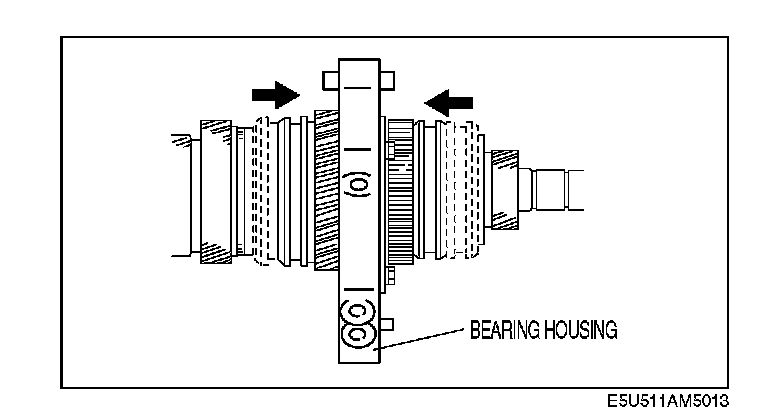
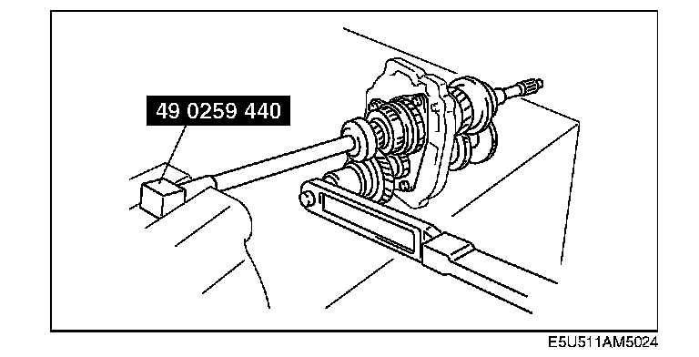

Locknut (Countershaft) Assembly Note
Locknut (Countershaft) Assembly Note
1. Shift the clutch hub sleeves into 1st and reverse gears to lock the rotation of the mainshaft.
2. Connect the SST to the mainshaft and secure it in a vise.

3. Install a new locknut and tighten it.
Tightening torque:
127 - 196 N-m (13 - 19 kgf-m, 94 - 144 ft-lbf)
4. Use a chisel to stake the locknut.